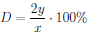
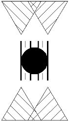

Stereobalace test is shown on picture 1. It's modificated triangle test to detect eye domination. If eye domination exist, line conecting triangles doesn't go throw circle's center.
During examination patient can independently:
Possibility to move triangles allow to compensate eye domination. Eye domination D is calculated from followed equation on the basics of distance between traingles x and horizontal triangle movement y.

